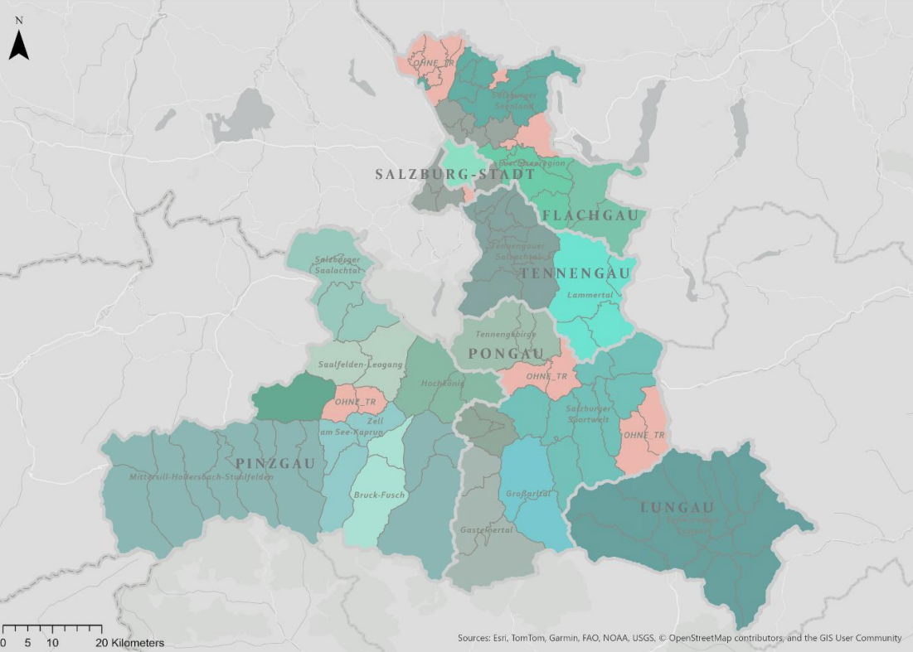
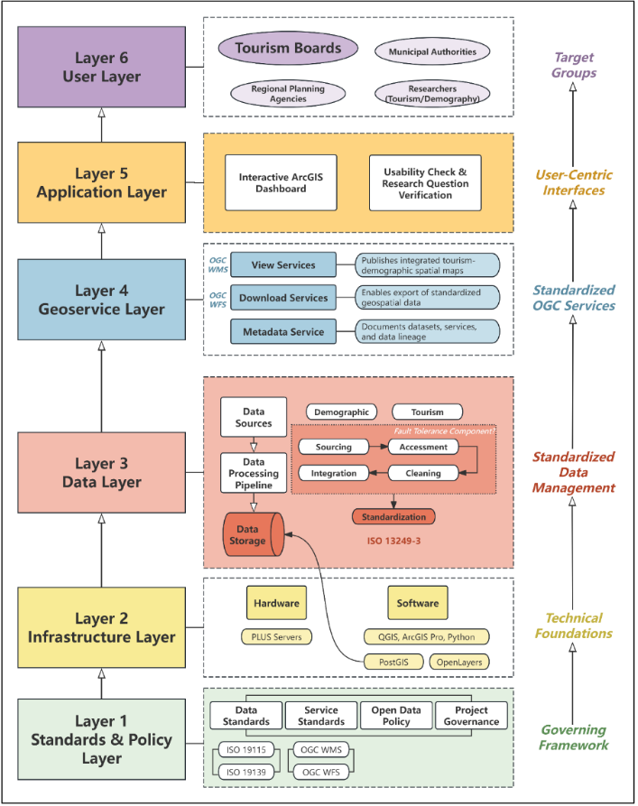
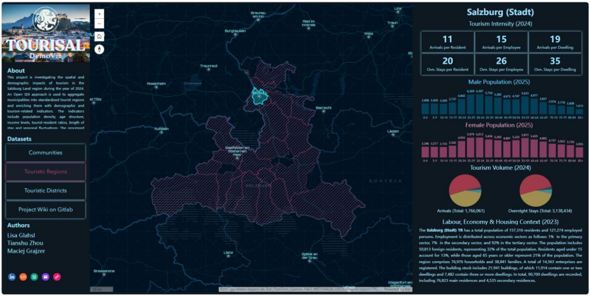
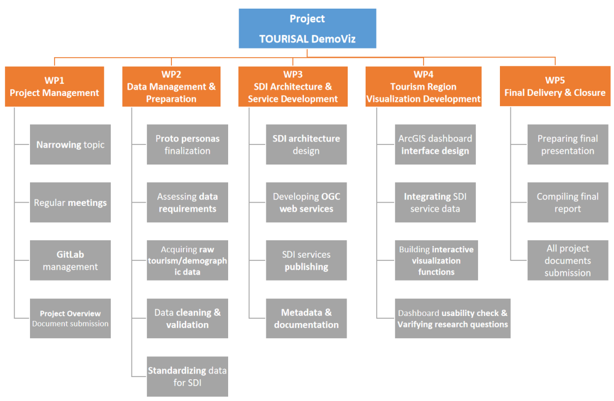

Visualization of Salzburg Tourism Regions with Integrated Demographic Data
A group project with Tianshu Z. & Maciej G. in the class "Spatial Data Infrastructure" winterterm 25/26.
Introduction
This project was developed within course "IP SDI Services Implementation", with a focus on the design and implementation of a spatial data infrastructure (SDI). A key requirement was to incorporate demographic data, including population density, household structures, as well as age and gender distribution.
Our group chose to explore a topic related to tourism in Salzburg, combining these demographic aspects with spatial analysis. Since the course also emphasized project management, this project not only reflects our technical implementation but also our collaborative planning and organizational approach.
Continue reading to learn more about both the project itself and the project management methods we applied. Please note that the resulting Dashboard cannot be shared to the public. Screenshots will be presented instead.
Project Description
This project investigates the spatial and demographic impacts of tourism in the Salzburg Land region, with a specific focus on the year 2024 for tourism data. An SDI-based approach was used to aggregate municipalities into standardized tourism regions and to enrich them with demographic, labour market, housing, and tourism-related indicators. The project integrates geospatial boundary data, official statistics, and tourism performance data into a standardized dataset covering three spatial levels: municipalities (GEM), tourism regions (TR), and tourism districts (TB). The processed data is visualized through an interactive web-based dashboard to support regional comparison and exploration of tourism-related pressure. By combining tourism, demographic, and labour market information in a single SDI framework, the project contributes to improved transparency and accessibility of tourism-related spatial information for regional analysis and planning purposes.
Project Purpose, Benefits and Target Group
The purpose of this project is to create an accessible and standardized geospatial information base that supports the analysis of tourism impacts in Salzburg Land. The integrated dataset and dashboard provide evidence-based insights into tourism intensity, accommodation structures, demographic characteristics, and housing-related indicators. The main benefit of the project lies in enabling users to better understand the relationship between tourism activity and local demographic and socio-economic structures. By presenting information at multiple spatial levels, the project supports comparison between regions and identification of areas with higher tourism pressure. The primary target groups are: Municipal authorities, Regional and tourism planning institutions, Tourism boards and destination management organizations
Project Objectives
The overall objective of the project is to develop a standardized SDI-based dataset and visualization system for assessing tourism-related impacts in Salzburg Land. The specific objectives include:
- Aggregating municipalities into officially recognized tourism regions and tourism districts
- Integrating demographic indicators such as population structure and population density
- Integrating tourism performance indicators including arrivals, overnight stays, and accommodation types
- Integrating labour market and housing-related contextual data
- Computing tourism-oriented Key Performance Indicators (KPIs)
- Implementing an interactive dashboard based on SDI standards to support regional comparison

Data
The data was collected from official statistical and geospatial sources and processed to support the integration of tourism, demographic, and labour market information for Salzburg Land.
Metadata and Standards
Metadata records were created for all key datasets using standardized metadata formats. Metadata includes information on data sources, processing steps, spatial reference, and attribute definitions. The metadata supports transparency and reuse of the project outputs and is stored alongside the datasets in the project repository.
SDI Architecture
The SDI was designed to support standardized data management, service publication, and visualization of tourism-related indicators, while ensuring interoperability and documentation in line with SDI principles. The architecture follows a layered approach, separating data storage, processing, service publication, and visualization components.
The SDI architecture consists of multiple functional layers, each responsible for a specific part of the data lifecycle. From data preparation to visualization, each layer interacts through standardized interfaces. The main components of the architecture include:
- Data processing and preparation tools
- Data processing and preparation tools
- Spatial databases for structured data storage
- OGC-compliant services for data access
- A web-based dashboard for visualization

Dashboard & Visualization
The dashboard prototype represents the final visualization outcome of the project. It integrates spatial data and tourism-oriented KPIs through SDI services and provides an interactive environment for exploring tourism–demographic dynamics in Salzburg Land.
Dashboard Concept
The dashboard supports comparative analysis between tourism regions and tourism districts by combining maps, charts, and key indicators. The visualization focuses on tourism intensity, accommodation structure, and demographic context.
Target User Perspective
The dashboard design was guided by a representative user persona reflecting a regional tourism planning perspective. The visualization emphasizes intuitive interaction and clear presentation over advanced analytical functionality.
Visualization Elements
The interactive dashboard includes:
- Interactive maps of tourism regions and tourism districts
- Thematic layers representing selected KPIs
- Charts supporting regional comparison


Project Management
Project management played a crucial role in coordinating our team of three students, especially given our different schedules. We approached the assignment as a real-world project, defining clear deadlines, deliverables, and an overall project structure.
To organize our work, we used timesheets to track individual contributions, created a work package structure, and developed Gantt charts to plan and monitor progress. Regular presentations helped us stay aligned and communicate our results effectively.
We used GitLab for version control and collaboration, enabling us to manage our code, track changes, and work efficiently as a team.

Conclusion
This was such a huge project. The main challenge was staying true to the original idea while still meeting our defined objectives. Project management took up a lot of time, but as is often the case, it’s a crucial part of making a project successful. Luckily, our group worked well together, and we were able to divide the tasks fairly—from data searching and processing to developing the SDI architecture, database management, and documentation (and more). We’re happy with how our dashboard turned out. Special thanks to Maciej, who put a lot of effort into both the design and functionality of the dashboard - experience builder was tricky quite a few times. One downside that is remaining is the long loading time for the WFS layer, and the dashboard occasionally crashes. However, with some deeper analysis and a few optimizations, this can definitely be improved.